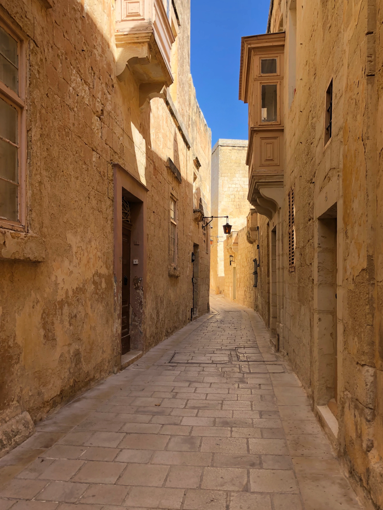
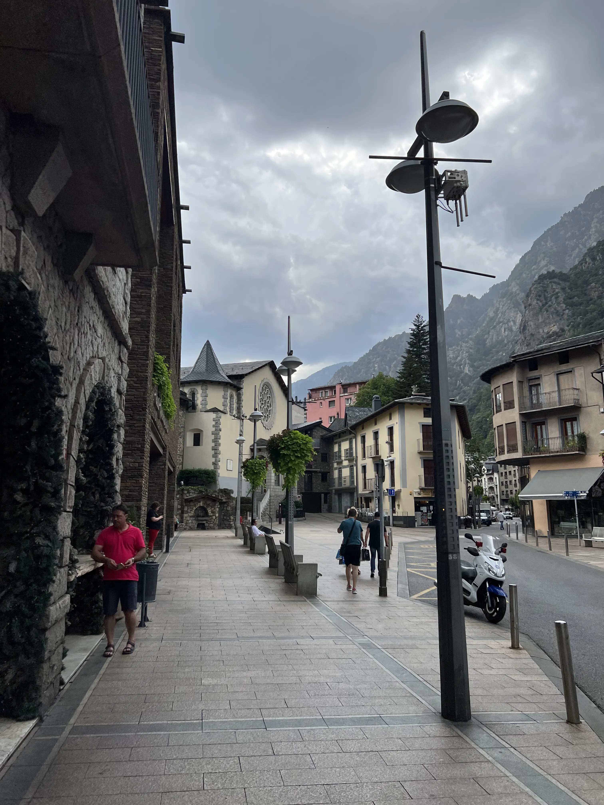
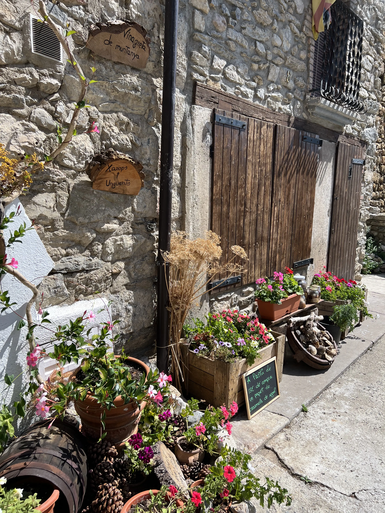

Projects
GAME in Processing
This programming project utilizes Processing,
a programming language and development environment, to create a
game where users must catch a ball in a basket. The objective of
the game is to catch the ball as many times as possible in the
moving basket. The game gets harder as the user catches the ball
more times and the speed of the basket increases. To make the
game more challenging, the background is moving in a way that makes
it hard to focus on the game. The ball is black which allows users
with color blindness to play the game, however, it can be challenging
for people who cannot look at a moving screen for a long time.
To help players keep track of their progress, a score board is
displayed on top of the game screen. The baskets have been designed
with a darker tone to make it easier for players to understand where
the ball should be thrown.
"CLAIM THE CITY"
Have you ever considered the excitement of bonding over a meal
or exploring a museum with a complete stranger? The "Find Your
People for the Day" touchscreen in the city center makes it easy
to connect with others who share similar interests. By creating a
profile and setting a goal for the day, such as searching for a
companion to dine at a Chinese restaurant or join in a basketball game,
individuals can easily connect with one another. The contacts and
information about users are on the screen. (As a designer, my priority
is to provide a secure platform for users to comfortably expand their
social circles. To ensure safety, the touchscreen requires ID
verification before use, eliminating the risk of any unsavory situations.)

"EXPLORE THE WORLD" - LIFE LONG PROJECT
This photography project is a personal journey for me - the photographer,
who wants to create a life-long photo album chronicling their craziest experiences. I plan
to capture candid and raw moments that truly represent the wild and unpredictable nature
of life. The images will not only showcase my personal experiences but also provide a glimpse
into the world of adventure and excitement. The project will be a visual storybook, where each
photograph tells a unique and thrilling tale. I will use various techniques such as long exposures,
panoramas, and creative compositions to create striking and dynamic images. This project is not
just about taking pictures, but about preserving memories and sharing them with others. The
final product will be a curated collection of photographs that will be cherished for years to come.
.webp)



